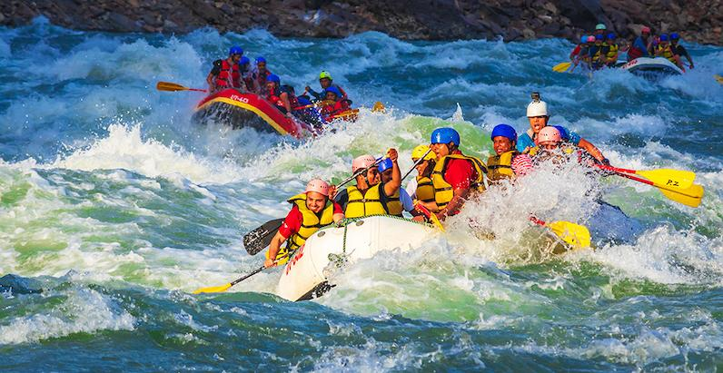

Our company exists to bring adventure, joy, and connection to all who seek the thrill of the river. Our mission is to paddle boldly into new horizons, guided by courage and camaraderie. Our creed is to honor the waters, respect the wild, and cherish every splash of laughter. Our motto: "Row strong, live free."